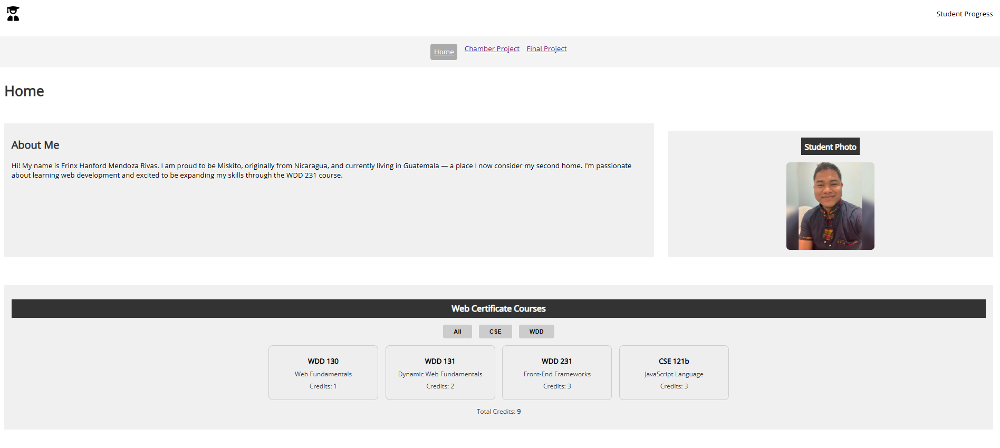

Site Name
EcoTrail Adventures was selected as the name because the site focuses on sustainable and nature-based hiking experiences. It reflects the values of eco-friendliness, adventure, and nature exploration.
Site Purpose
The purpose of the site is to serve as a comprehensive guide for people looking to explore eco-friendly hiking trails, gear recommendations, sustainability tips, and join a like-minded community of hikers. It will include trail maps, gear reviews, events, and a newsletter signup.
Scenarios
- What are the top beginner-friendly eco trails near my city?
- How do I choose eco-friendly hiking gear?
Color Schema
- Forest Green (#2E8B57): Used for headers, navigation bar, and buttons to reflect nature.
- Light Sand (#F5F5DC): Used for background and section areas for a clean, natural look.
Typography
- Header Font: "Montserrat", sans-serif – used for all headings.
- Body Font: "Open Sans", sans-serif – used for paragraphs and general content.
Wireframes
Mobile View
Desktop View
Note: Replace the image paths above with your actual sketches saved as wireframe-mobile.jpg and wireframe-desktop.jpg in your project folder.